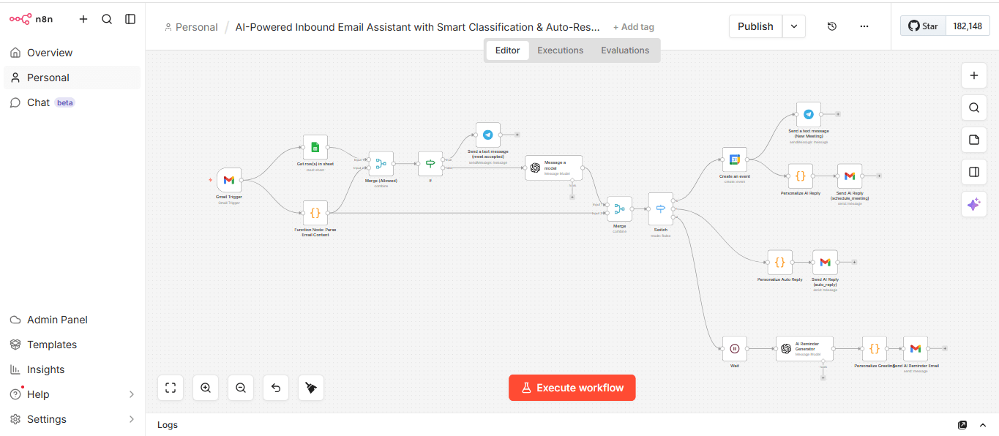
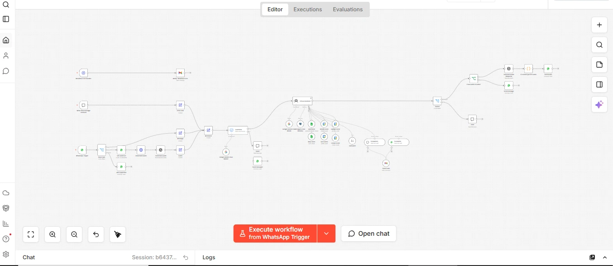
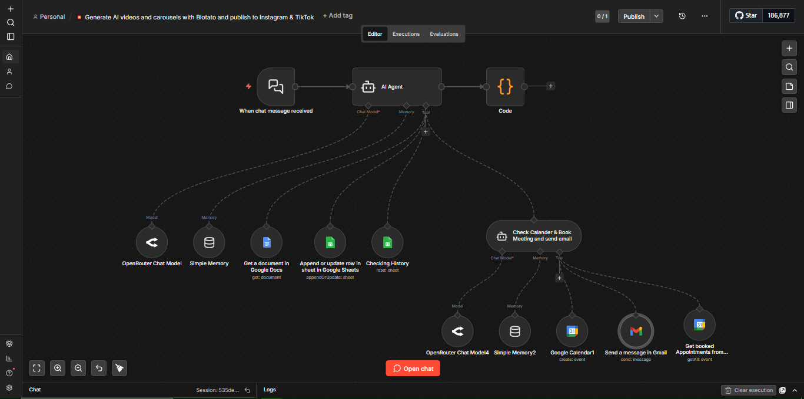
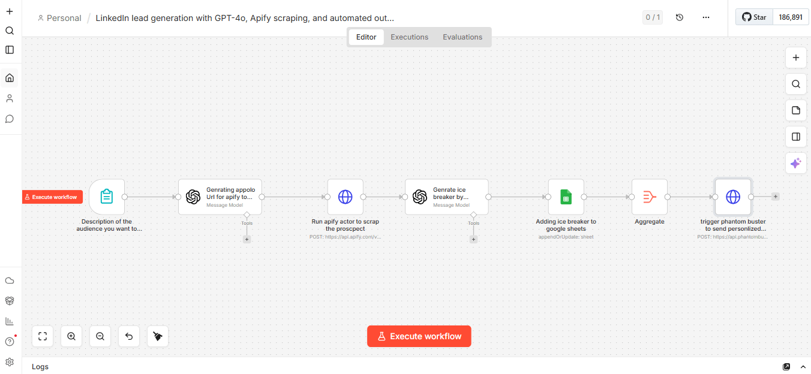

Home / Work / Automation
03 / Systems
AI and workflow automation.
I build and explore AI applications and automation solutions, with JavaScript, Python, and Node.js listed among my technical experience.

n8n · AI email automation
AI Email Assistant & Auto-Response System
Sorts incoming emails, identifies what senders need, and routes the right reply or follow-up.
Read more
An AI-powered inbox workflow built to reduce manual email sorting, respond faster, and help ensure incoming leads are not missed.
How the workflow works
- Monitors Gmail and checks senders against an allowlist in Google Sheets, while ignoring automated replies.
- Uses AI to classify messages as meeting requests, general inquiries, or unclear messages.
- Creates Google Calendar meetings, sends personalized email replies, or schedules follow-ups based on the message type.
- Sends real-time workflow notifications through Telegram.
The workflow was designed to reduce repetitive inbox work and streamline lead communication for the client.

AI · WhatsApp · Appointment scheduling
AI WhatsApp Booking Assistant
Lets salon customers book, reschedule, or cancel appointments through WhatsApp.
Read more
An AI-powered WhatsApp assistant built to automate appointment scheduling for a hair salon.
Booking and support flow
- Lets customers book, reschedule, or cancel appointments through text or voice messages.
- Uses an AI agent to understand intent, check availability, and manage appointments.
- Applies guardrails to unsupported requests and escalates to the team when human help is needed.
The assistant is designed to make booking easier for customers and reduce routine appointment-management work.

n8n · AI lead qualification · Google Calendar
AI Lead Qualification & Booking System
Qualifies website inquiries around the clock and helps ready prospects book a sales call.
Read more
A 24/7 website chat workflow designed to qualify incoming prospects and help ready leads schedule a sales call without manual back-and-forth.
From conversation to confirmed meeting
- Engages website visitors in a conversational chat and asks strategic questions to understand their needs.
- Collects key details, tracks interactions in Google Sheets, and assesses whether a prospect is ready to book.
- Checks current Google Calendar availability and schedules a meeting for qualified leads.
- Sends a professional confirmation email and keeps lead information available for tracking and follow-up.
The system is designed to improve response times and reduce routine qualification and scheduling work.

GPT-4o · Google Sheets · Human review
AI-Assisted LinkedIn Lead Research
Organizes authorized prospect research and prepares outreach drafts for human review.
Read more
A workflow concept for organizing relevant prospect research and preparing contextual outreach drafts for human review.
Research-to-review process
- Starts from defined audience criteria and prospect information from authorized sources.
- Uses AI to organize lead context and draft a relevant opening message.
- Stores research and draft messages in a structured Google Sheets review queue.
- Leaves prospect selection and outreach approval to a person before contact.
Possible project scope
Keep automation understandable and reviewable.
- AI-assisted workflows and application features
- Enquiry triage and lead follow-up automation
- Appointment and customer-support flows
- Testing and clear handover for the people using the system
Discuss an automation projectBack to portfolio